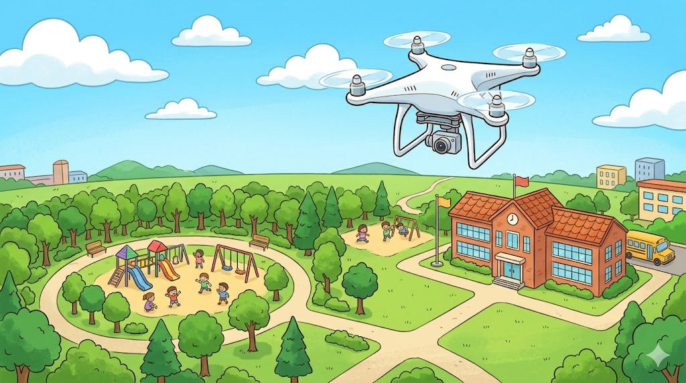
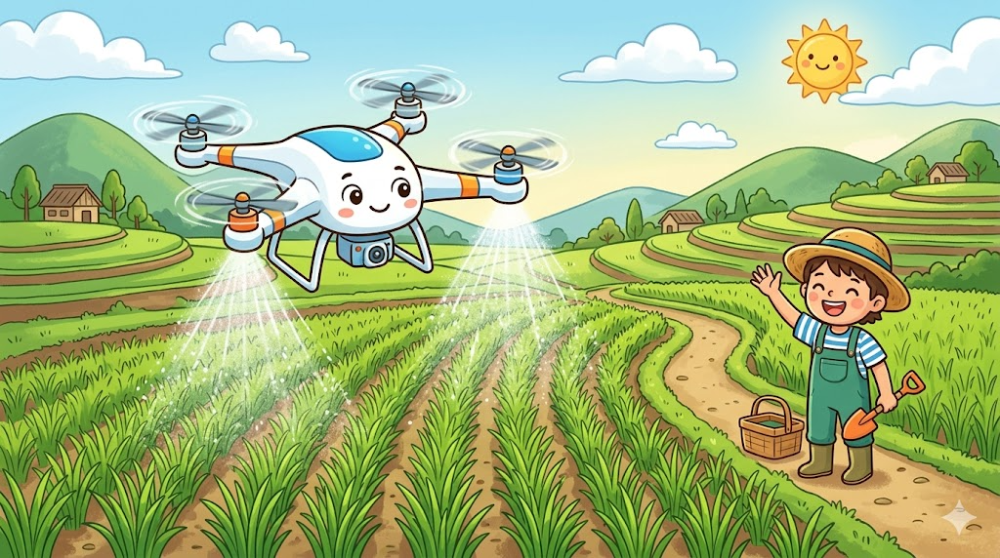
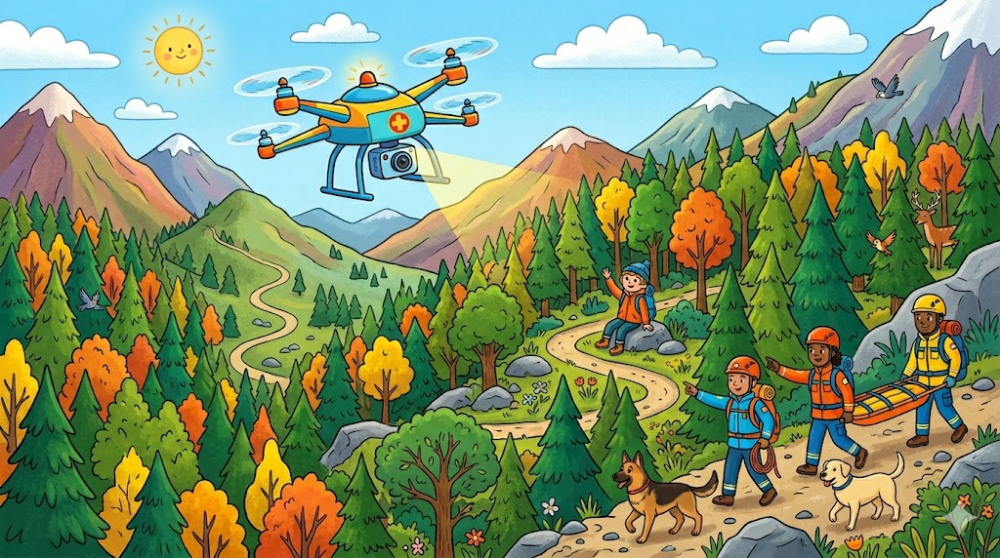
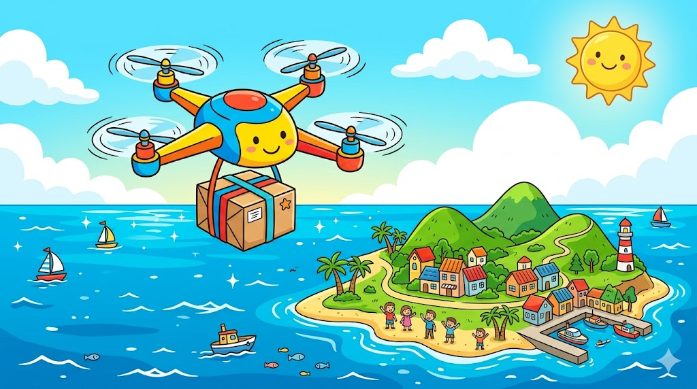
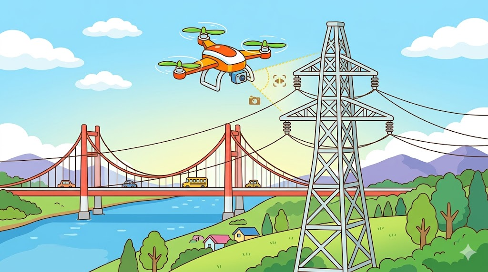
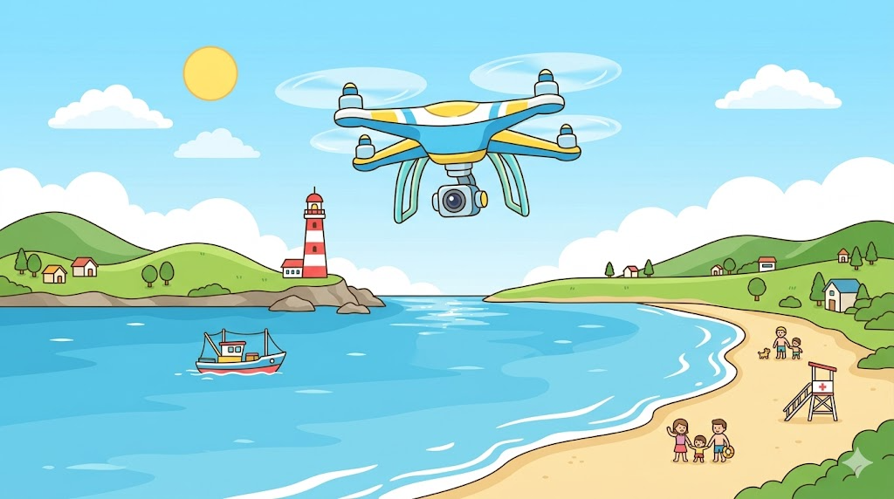

它不只是「會飛的玩具」。無人機正在幫人做太危險、太花時間、或人根本到不了的工作。下面七件事，看完你就懂了。
無人機 = 一台會飛、又能裝相機或貨物的小幫手。重點不是「它會飛」，而是「它飛上去之後，幫人做了什麼」。往下看七個它正在做的工作。

從天空往下拍風景、運動會、新聞畫面。它就是一台會飛的相機，能拍到人爬不上去的角度。

幫農作物噴藥、施肥，還能從空中看出哪裡有蟲害。比阿公背噴霧器省 95% 的水、快很多，農夫也少吸農藥。

山上有人失蹤、地震房子倒了，無人機先飛上去找人、看災情，還能空投物資。救難人員不用先冒險。

住離島或山上的人缺藥、缺東西很難等。無人機可以飛過海、飛過山，把東西直接送到家。

高壓電塔、橋樑、煙囪幾十公尺高，工人爬上去很危險。改派無人機飛上去拍照檢查，安全又快。
節慶時天空上幾百個亮點排出文字和圖案——那不是煙火，是上百台無人機一起飛，每一台都照計畫飛到自己的位置，還不能相撞。

它可以在危險的地方代替人去「看清楚」——偵察、回報情況，讓人不必親自冒險。對土地小的國家，這是用較少成本保護自己的方式。
這七件事裡，你覺得哪一件「最酷」？哪一件「最有用」？它們有一個共同點——你發現了嗎？（提示：都是人做不到或不安全的事）